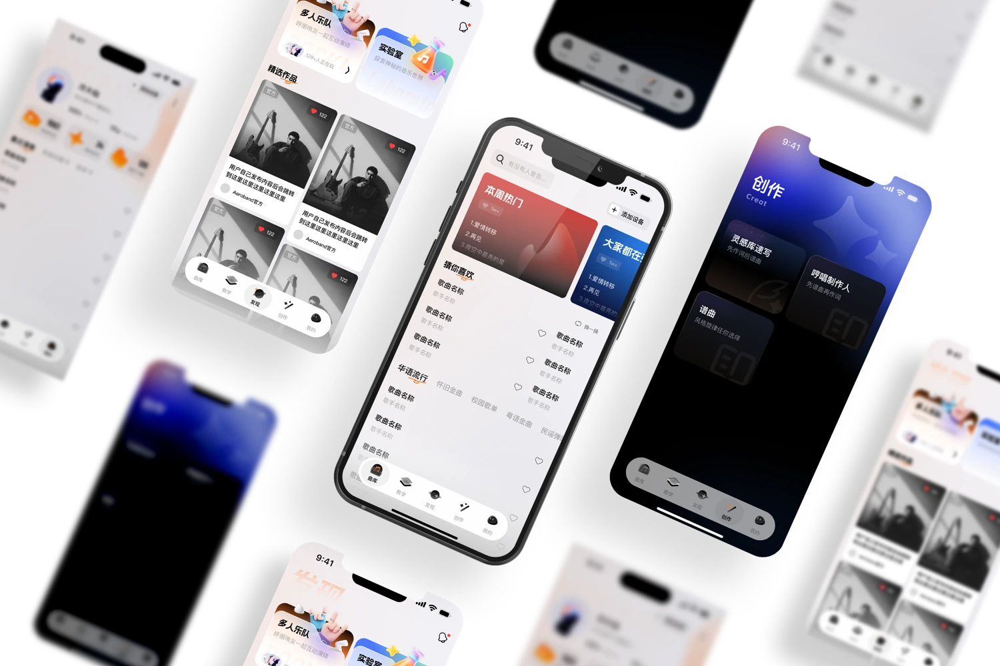
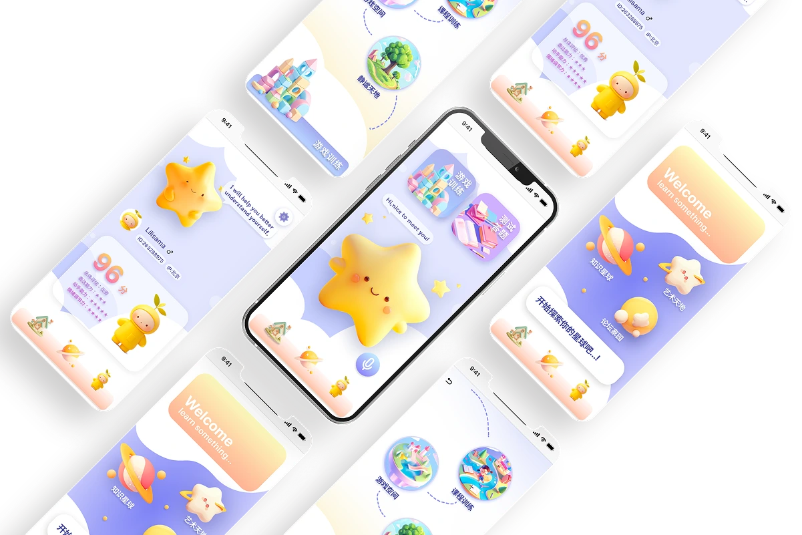
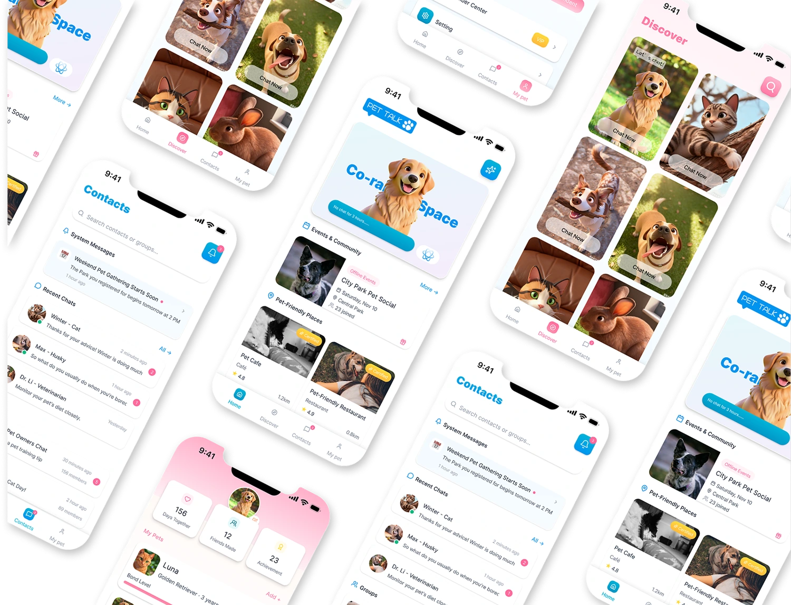

Aeroband
深圳戴乐体感科技有限公司 · 产品 UI/UX 设计实习
参与 App 3.0 曲库、创作与教学板块设计，以及旧版本体验维护；推进搜索、AI 创作原型、组件规范与设计验收。
RUI LI · SELECTED PORTFOLIO
体验设计 / 交互设计 / 服务设计
2027 届 · OPEN TO OPPORTUNITIES

音乐、灵感与流畅的演奏体验
产品与交互设计 ↗
让每一颗星星都被看见
儿童支持与服务体验 ↗
以宠物为媒介，连接情感与生活
AI 体验与兴趣社区 ↗01 / SELECTED WORK
真实产品迭代与自主探索。
这里记录的不只是界面，
还有背后的观察、判断与过程。
SMALL THINGS, OTHER POSSIBILITIES
信息可视化、品牌、字体与 AIGC。
不同媒介，同样认真地观察与表达。
02 / A LITTLE ABOUT ME

从视觉传达到服务设计，
我关心屏幕背后的真实生活。
本科就读于中国传媒大学视觉传达设计专业，目前在格拉斯哥艺术学院学习设计创新与服务设计。品牌与视觉训练让我重视表达，产品实习则让我更关注：用户是否理解、操作是否顺畅，以及设计如何真正落地。
我参与过音乐与智能硬件 App、校外培训公共服务产品和媒体平台设计，也在个人项目中探索儿童支持、数字生活与情感连接。喜欢把零散观察整理成问题，再用原型让想法变得可以讨论和验证。
查看我的简历 ↗用户访谈 · 竞品分析
需求梳理 · 用户旅程 · 服务蓝图
信息架构 · 用户流程
交互原型 · 可用性测试
UI 与品牌视觉 · 组件规范
Figma · Adobe · AI 辅助创作
深圳戴乐体感科技有限公司 · 产品 UI/UX 设计实习
参与 App 3.0 曲库、创作与教学板块设计，以及旧版本体验维护；推进搜索、AI 创作原型、组件规范与设计验收。
教育部教育技术与资源发展中心 · 产品设计项目实习
参与品牌调研与 UI 方案设计，围绕家长选课、可信决策、多孩学习管理和课程消费流程进行体验探索。
CCTV（北京）央视娱乐有限公司 · 设计实习
参与音乐板块 UI 视觉升级、栏目界面与活动图标设计，支持传播与宣传视觉输出。
设计创新与服务设计 · 硕士在读
学位授予院校：格拉斯哥大学
视觉传达设计（广告设计方向）· 学士
校优秀毕业生 · 校团委宣传与媒体运营部门负责人经历
SELECTED RECOGNITION / 部分荣誉
全国大学生广告艺术大赛2024 全国三等奖 / 2025 北京一等奖
中国国际大学生创新大赛2024 北京二等奖 / 2025 北京三等奖
米兰设计周中国高校设计学科师生优秀作品展北京赛区三等奖
人工智能未来设计大赛华北赛区二等奖
04 / LET’S MAKE SOMETHING MEANINGFUL
开放交流与工作机会